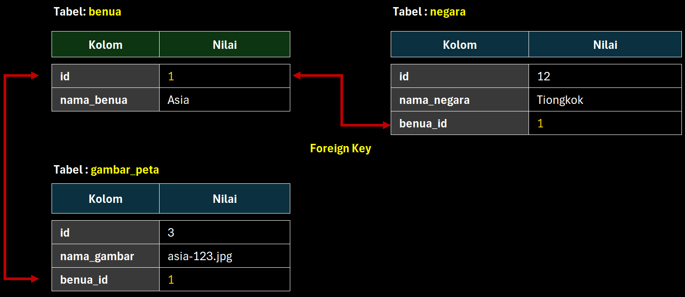
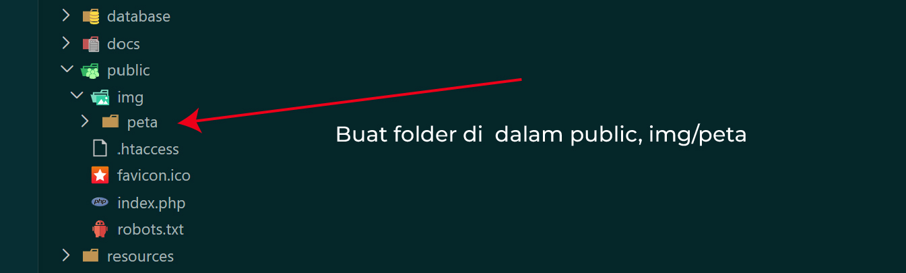

LARAVEL CHEATSHEET : CRUD - Upload File Gambar
Ananda Daniswara - Skylotus DesignMenu Utama | CRUD : Nama-Nama Negara
01. Target tabel: gambar_benua MySQL
Membuat tabel gambar_benua yang berelasi dengan tabel benua
02. Hyperlink: Upload Peta Benua
Buka file benua_tampil_detail.blade.php lalu tambahkan tombol hyperlink Upload Peta+ sebelum daftar nama-nama benua
<a href="/peta-upload/{{$data_benua->id}}">Upload Peta</a><hr>
<h4>{{$data_benua->nama_benua}}</h4>
<ul>
@foreach($data_benua->negaranya as $negara)
<li>{{$negara->nama_negara}}</li>
@endforeach
</ul>
03. Route: /peta-upload/
Tambahkan route /peta-upload untuk menjalankan metode peta_upload pada PetaController
Route::get('/peta-upload/{id}', [PetaController::class, 'peta_upload']);
# solver
use App\Http\Controllers\PetaController;
04. Make: PetaController
Tambahkan route /peta-upload untuk menjalankan metode peta_upload pada PetaController
CMD: php artisan make:controller PetaController
public function peta_upload($idb)
{
return view('peta_upload_form', ['idnya' => $idb]);
}
05. File: peta_upload_form.blade.php
Buatkan file peta_upload_form.blade.php di recources/views
@extends('navbar/navbar')
@section('konten_utama')
<form action="/peta-upload-proses/{{$idnya}}" method="post" enctype="multipart/form-data">
@csrf
<input type="file" name="nama_gambar" accept=".jpg, .png, .jpeg, .webp">
<input type="submit" name="simpan">
</form>
@endsection
06. Route: /peta-upload-proses/
Tambahkan route /peta-upload-proses/{id} untuk menjalankan metode peta_upload_proses pada PetaController
Route::post('/peta-upload-proses/{id}', [PetaController::class, 'peta_upload_proses']);
07. Metode: peta_upload_proses
Tambahkan metode peta_upload_proses di PetaController dan tangkap id yang dikirim lewat form dan route
public function peta_upload_proses(Request $request, $idb)
{
if($request->hasFile("nama_gambar")){
$gambarnya = $request->file("nama_gambar");
$nama_gambar = time(). "-" . $gambarnya->getClientOriginalName();
$nama_gambar_ok = str_replace(['(', ')', ' '], '', $nama_gambar);
$gambarnya->move('img/peta/', $nama_gambar_ok);
$peta = new Peta();
$peta->nama_gambar = $nama_gambar_ok;
$peta->benua_id = $idb;
$peta->save();
}
return redirect('/benua-detail/' . $idb);
}
# solver
use App\Models\Peta;
08. Folder: public/img/peta
Buka direktori bernama public, buat folder img, lalu buat folder peta di dalam img
09. Make Migration: create_gambar_peta_table
CMD: php artisan make:migration create_gambar_peta_table
Schema::create('gambar_peta', function (Blueprint $table) {
$table->id();
$table->string('nama_gambar', 255);
$table->foreignId('benua_id')->references('id')->on('benua')->onDelete('cascade');
$table->timestamps();
});
# solver
CMD: php artisan migrate
10. Make Model: Peta
# solver
CMD: php artisan make:model Peta
protected $table = "gambar_peta";
protected $fillable = ["nama_gambar", "benua_id"];
11. Model Benua: HasMany
Kembali ke Model Benua, tambahkan metode berikut agar Model Benua dapat Berelasi dengan Model Peta
public function gambarPetanya(){
return $this->hasMany(Peta::class, 'benua_id', 'id');
}
# solver
use App\Models\Peta;
12. BenuaControler: with Peta
Buka file BenuaControler dan cari metode benua_detail lalu ubah menjadi seperti berikut:
public function benua_detail($idb)
{
$dt_benua = Benua::with('negaranya')->find($idb);
$petaModel = Benua::with('gambarPetanya')->find($idb);
return view('benua_tampil_detail', ['data_benua' => $dt_benua, 'data_peta' => $petaModel]);
}
13. Halaman: Tampil Gambar Peta
Buka kembali file benua_tampil_detail.blade.php lalu tambahkan kode berikut
<div>
<!-- hanya mengambil data pertama agar tidak harus di-loop -->
@php
$gambarPeta = $data_peta->gambarPetanya->first();
@endphp
@if($data_peta->gambarPetanya->isNotEmpty())
<img src="/img/peta/{{$gambarPeta->nama_gambar}}" alt="peta" style="max-width:460px;">
@else
<a href="/peta-upload/{{$data_peta->id}}">Upload Peta</a>
@endif
</div>
<hr>
14. Hyperlink: Hapus Gambar
<div>
<!-- hanya mengambil data pertama agar tidak harus di-loop -->
@php
$gambarPeta = $data_peta->gambarPetanya->first();
@endphp
@if($data_peta->gambarPetanya->isNotEmpty())
<img src="/img/peta/{{$gambarPeta->nama_gambar}}" alt="peta" style="max-width:460px;">
<br><a href="/peta-hapus-proses/{{$data_benua->id}}/{{$gambarPeta->id}}">Hapus</a>
@else
<a href="/peta-upload/{{$data_peta->id}}">Upload Peta</a>
@endif
</div>
<hr>
15. Route: /peta-hapus-proses/
Route::get('/peta-hapus-proses/{idb}/{idp}', [PetaController::class, 'peta_hapus_proses']);
16. Metode: peta_hapus_proses
Pada PetaController buatkan metode untuk peta_hapus_proses
public function peta_hapus_proses($idb, $idp){
$petaModel = Peta::find($idp);
if(File::exists('img/peta/' . $petaModel->nama_gambar)){
File::delete('img/peta/' . $petaModel->nama_gambar);
}
$petaModel->delete();
return redirect('/benua-detail/' . $idb);
}
# solver
use Illuminate\Support\Facades\File;
17. Hapus File Gambar
Next: Hapus file gambar di public/img/peta ketika nama Benua dihapus
foreach($dataGambar as $gambar){
if(File::exists('img/peta/' . $gambar->nama_gambar)){
File::delete('img/peta/' . $gambar->nama_gambar);
}
}
18. Full Code: benua_tampil_detail.blade.php
@extends('navbar/navbar')
@section('konten_utama')
<div>
<div>
<!-- hanya mengambil data pertama agar tidak harus di-loop -->
@php
$gambarPeta = $data_peta->gambarPetanya->first();
@endphp
@if($data_peta->gambarPetanya->isNotEmpty())
<img src="/img/peta/{{$gambarPeta->nama_gambar}}" alt="" style="max-width:460px;" class="mb-2">
<br><a href="/peta-hapus-proses/{{$data_benua->id}}/{{$gambarPeta->id}}">Hapus</a>
@else
<div class="mb-2 h5 text-secondary">Belum Ada Gambar Peta</div>
<a href="/peta-upload/{{$data_peta->id}}">Upload Peta</a>
@endif
</div>
<hr><h4>{{$data_benua->nama_benua}}</h4>
<ul>
@foreach($data_benua->negaranya as $negara)
<li>{{$negara->nama_negara}}</li>
@endforeach
</ul>
<br><a href="/benua">Kembali</a> |
<a href="/benua-hapus/{{$data_benua->id}}">Hapus</a> |
<a href="/benua-ubah/{{$data_benua->id}}">Ubah</a> |
<a href="/negara-hapus/{{$data_benua->id}}">Hapus Negara</a> |
<a href="/negara-tambah/{{$data_benua->id}}">Tambah Negara+</a>
</div>
@endsection